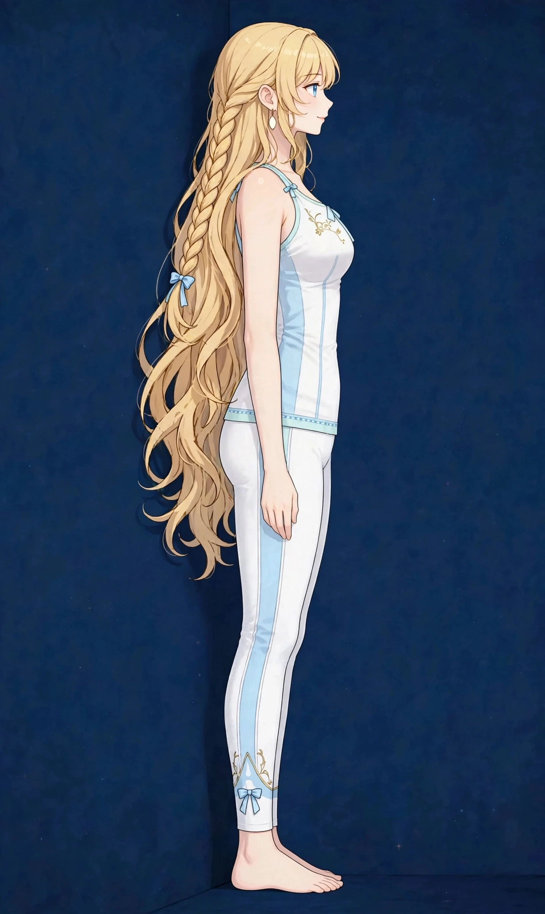

梅田で姿勢の解説｜猫背・巻き肩・反り腰のタイプと見分け方姿勢・見た目

「姿勢が悪い」と言われても、自分がどのタイプなのか分からない——そんな方に向けて、姿勢評価の教科書で用いられる分類をもとに、姿勢のタイプと見分け方をまとめました。猫背・巻き肩・反り腰といった日常の言葉との対応もあわせて解説します。
姿勢とは
姿勢とは、立っているとき・座っているときの、頭・背骨・骨盤・脚といった体全体の並び方（アライメント）のことです。骨の並びを筋肉が支え、そのバランスの取り方が人それぞれの姿勢として表れます。姿勢は生まれつきの骨格だけで決まるものではなく、仕事や生活のクセ、筋肉の張りと支えのバランスによって少しずつ形作られていくものとされています。
姿勢は見た目の印象と体の負担の両方に関わります。背中が丸まれば若々しさとは反対の印象に見えやすく、反対に背筋がすっと伸びた立ち姿は全体の印象を引き締めます。また、並びが崩れた姿勢では、特定の筋肉や関節に負担が集中しやすくなります。頭が前に出れば首や肩まわりの筋肉が頭の重さを支え続け、骨盤の傾きが偏れば腰まわりに負担が集まる、といった具合です。「どこに負担が集まっているか」を読む手がかりとして、姿勢のタイプを知ることが役立ちます。
理想的な姿勢のアライメント
姿勢評価の教科書では、理想的な姿勢の目安として、横から見たときに体の各部位が一本の垂線（重心線）の近くに並ぶ状態が示されます。その目安となる点は、耳垂（耳たぶ）・肩峰（肩の先端）・大転子（太ももの付け根外側の骨の出っ張り）・膝関節のやや前方・外果（外くるぶし）のやや前方で、この5点を結ぶラインがおおよそ一直線にそろう並びが、負担の分散した姿勢の目安とされています。図1に、その重心線と各点の位置を示しました。
正面から見た場合は、左右対称が基本の考え方です。両肩の高さ、骨盤（腰骨）の高さ、両膝の向きなどがそろっているかを見ます。左右差があると、片側の筋肉ばかりが働いたり、片側の関節に負担が寄ったりしやすくなります。なお、ここでいう「理想」はあくまで評価の基準となる目安で、日常生活のすべての場面でこの並びを保つことが目的ではありません。自分の並びが基準からどの方向にずれているかを知ることが、ケアの出発点になります。
図1｜側面から見た理想的な姿勢のアライメントと重心線

姿勢のタイプ分類
姿勢評価の教科書で広く使われるケンダルの分類では、立位姿勢を脊柱のカーブの出方によって大きく4つのタイプに分けます。背骨にはもともと、首と腰で前に反る（前弯）、背中で後ろに丸まる（後弯）という緩やかなS字カーブがあり、そのカーブの強弱の組み合わせでタイプが分かれます。図2に4タイプの並びの違いを示しました。
理想型
見た目の特徴：頭・背中・骨盤・脚が重心線の近くに並び、脊柱のカーブが緩やかなS字を描くタイプです。負担がかかりやすい部位：負担が一か所に集中しにくく、筋肉の前後のバランスが取れている状態とされます。日常のクセ：特定のクセに偏らず、立ち・座り・歩きのバランスが取れている状態です。ケアの場面では、この並びが「基準」となり、他のタイプとの違いを比べる物差しになります。
後弯・前弯型
見た目の特徴：背中の後弯（丸み）と腰の前弯（反り）の両方が強く出るタイプで、頭が前に出て、背中が丸まり、お腹が前に出て見えやすくなります。負担がかかりやすい部位：首・肩まわり、背中、腰まわりに負担が集まりやすいとされます。日常のクセ：デスクワークやスマホで前かがみになる時間が長い方、胸の前側が縮こまりやすい方に多く見られます。日本で一般的に言われる猫背と巻き肩は、このタイプに重なりやすく、頭が前に出る点ではストレートネックと呼ばれる状態とも関係します。
平背型
見た目の特徴：脊柱のカーブが全体に小さく、背中がまっすぐに見えるタイプです。一見すると姿勢が良く見えますが、骨盤が後ろへ倒れ（後傾）、腰の前弯が失われているのが特徴です。負担がかかりやすい部位：カーブによるクッションが働きにくく、腰や背中に負担がかかりやすいとされます。日常のクセ：椅子に浅く腰掛けてお尻が前に滑る「仙骨座り」が続く方や、背筋を伸ばす意識が強く、背中を固めて保っている方に見られます。
スウェイバック型
見た目の特徴：骨盤が体の中心より前にずれ（前方へ移動し）、上体が後ろへ倒れるように傾くタイプです。背中の丸みが長く続き、頭が前に出て見えます。負担がかかりやすい部位：腰の後ろ側や股関節の前側、膝の後ろ側に負担がかかりやすいとされます。日常のクセ：片足に体重をかけて立つ、壁や台にもたれて立つといった立ち方のクセが続く方に見られます。腰が反って見えることから反り腰と間違われやすいタイプですが、骨盤の位置そのものが前にずれている点が、腰の前弯が強い状態とは異なります。
なお、これらのタイプはきれいに一人一タイプに分かれるものではなく、背中は後弯・前弯型寄り、骨盤はスウェイバック型寄りといった混ざり合いが普通です。大切なのは、自分の並びが基準からどの方向にどれくらいずれているかを知り、負担が集まっている場所を推測する手がかりにすることです。
図2｜姿勢タイプ別の比較（側面）
理想型耳・肩・骨盤が一直線
後弯・前弯型猫背・巻き肩に重なる
平背型カーブが小さく平ら
スウェイバック型骨盤が前にずれ上体は後ろへ
自宅でできるセルフチェック
自分の姿勢タイプの目安は、自宅の壁を使っても確認できます。図3の姿で、次の手順でチェックしてみてください。
- 1．壁に背中をつけて立つかかとを壁から少しだけ離し、後頭部・背中・お尻・かかとが壁に触れるように立ちます。この時点で後頭部が壁につかない場合は、頭が前に出ているサインのひとつです。
- 2．腰の後ろのすき間を見る腰の後ろと壁の間に手を差し入れてみます。手のひら1枚分ほどの厚みが目安とされ、それより大きく空く場合は腰の前弯が強め、手が入りにくい場合は前弯が小さめ（平背寄り）と考えられます。
- 3．横向きの写真で確認する家族に撮ってもらうか、タイマー撮影で横向きの全身写真を撮り、耳と肩の位置関係を見ます。耳が肩より大きく前に出ていれば、頭の前出が強いサインです。肩の先端が体の中心より前に出ていれば、巻き肩寄りの並びと考えられます。
チェックは「良い・悪い」を判定するものではなく、今の並びを知るための目安です。姿勢を無理に正そうとして痛みやしびれが出る場合は中止し、気になる症状が続くときは医療機関にご相談ください。
図3｜壁を使った姿勢チェック
当院の美容整体でのアプローチ
美容整体
当院では、まず姿勢タイプと日常のクセを一緒に確認し、どの部位に負担が集まっているかを見立てたうえで施術を組み立てます。進め方は、はじめにオイルマッサージで張りの強い部位をほぐし、続いて美容整体で首・肩・骨盤まわりを中心に、無理のない力加減で整えていく流れです。施術の前後では鏡の前に立っていただき、姿勢の感じを一緒に確認する時間を大切にしています。
姿勢は日常のクセの積み重ねで形作られるため、施術だけでなく、座り方やスマホの持ち方といったクセの見直しと、自宅でできるセルフケアもあわせてお伝えします。一回の施術で並びそのものを作り替えるのではなく、負担の集まりにくい体の使い方を目指していく考え方です。
受診の目安
次のような場合は、サロンでのケアの前に医療機関への受診をおすすめします。
- 強い痛みやしびれが続いている
- 背骨の変形を指摘されたことがあり、痛みが増えている
- 転倒や事故のあとから姿勢や痛みが変わった
- 痛みが日に日に強くなっている
当店は医療機関ではなく、診断は行いません。迷うときは、まずかかりつけの医療機関にご相談ください。
参考：ケンダル『筋：機能とテスト ―姿勢と痛み―』など、姿勢評価の教科書で用いられる分類に基づいています。
関連するお悩みページ
ご予約
ステラポラリス（大阪・梅田／女性専用）｜オイルマッサージ 90分 10,000円｜月〜土 17:00〜22:00・完全予約制
ご予約はLINE公式アカウントで受け付けています。希望の日時と、気になる場所を送ってください。